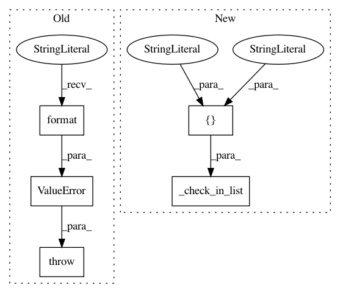

c0f839bf9b332c410f393ed330271fbcf8128f40,lib/matplotlib/axis.py,Tick,_set_labelrotation,#Tick#Any#,198
Before Change
mode = "default"
angle = labelrotation
if mode not in ("auto", "default"):
raise ValueError("Label rotation mode must be "default" or "
""auto", not "{}".".format(mode))
self._labelrotation = (mode, angle)
def apply_tickdir(self, tickdir):
Calculate self._pad and self._tickmarkers.
After Change
else:
mode = "default"
angle = labelrotation
cbook._check_in_list(["auto", "default"], labelrotation=mode)
self._labelrotation = (mode, angle)
def apply_tickdir(self, tickdir):
Calculate self._pad and self._tickmarkers.
In pattern: SUPERPATTERN
Frequency: 4
Non-data size: 5
Instances
Project Name: matplotlib/matplotlib
Commit Name: c0f839bf9b332c410f393ed330271fbcf8128f40
Time: 2019-02-22
Author: anntzer.lee@gmail.com
File Name: lib/matplotlib/axis.py
Class Name: Tick
Method Name: _set_labelrotation
Project Name: matplotlib/matplotlib
Commit Name: 93e0f39c8ed9a5a51d0acd38a885aaed96dd7c0e
Time: 2019-02-23
Author: 2836374+timhoffm@users.noreply.github.com
File Name: lib/matplotlib/axis.py
Class Name: Tick
Method Name: _set_labelrotation
Project Name: matplotlib/matplotlib
Commit Name: aac340fe72d1ec009759fffece8b780df61e432e
Time: 2019-05-13
Author: anntzer.lee@gmail.com
File Name: lib/matplotlib/quiver.py
Class Name: Quiver
Method Name: _h_arrows
Project Name: matplotlib/matplotlib
Commit Name: 3198be2276e462160c488a1549b5e05ad4b0b5a6
Time: 2020-03-17
Author: anntzer.lee@gmail.com
File Name: lib/matplotlib/tri/triinterpolate.py
Class Name: CubicTriInterpolator
Method Name: _compute_dof